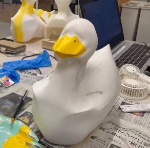

■＝考えないといけないことや疑問等 ●＝具体的にやること →＝やったこと
■本体の素材を決める
●素材の重量や、色を付けられるため3Dプリンタ―を用いる
⇢CURAでインフィル密度を１０％に変更し、なるべく軽量化できるように工夫した
■色の付け方をアクリル絵の具でするのか？付け置きでするのか？
⇢アクリル絵の具で塗る 本物のアヒルに近づけるために全体は白色、口は黄色にする
6/16アクリル絵具で色塗り

■目はアヒルの性格に寄せた形にしたい...どんな形にするかはコンセプトに合わせる
■アヒルが自立するように重さを調節
●頭部と後部で密度を変える
→5/26【試作１】収縮サイズでのアヒル完成！自立〇

■アヒルの下部に埋め込む車のサイズを車班と調節
⇢FUSIONでアヒルの下部に車の部品とスピーカーを横並びに入れ込めるようにした

■データ作成
⇢3Dプリンターのデータ作成
6/11【試作2】実寸サイズのアヒル完成（naako,harunaの二体分のデータをプリント）

●（試作2）の問題点...スピーカーは入ったが、車部分は車チーム指定の大きさを満たしてはない
翼を差し込む穴を開けるべき
⇣⇣⇣
⇢問題点をもとにデータを作り直し、プリントしなおした
【本体】2体分完成！！
●本体がやっとプリントできたので、naakoさんと一緒に色塗り、装飾を中心に進め、
翼作成、車班との兼ね合いを行う！
■翼のデータ作成
●アクリルで色を付け
⇢イラストレーターを用い、3mmのアクリル板をレーザーカッターでカット

●みんなのイメージどうりのアヒルにはどんな装飾が適切か話し合う
■「かわいくて、かっこよくて、うるさい」をどう表現するか